How to draw threedimensional representations of crystals.
Open in Editor
Contents
Simple Crystal Shapes
In the case of cubic or hexagonal materials the corresponding crystal are often represented as cubes or hexagons, where the faces correspond to the lattice planes {100} in the cubic case and {1,0,-1,0},{0,0,0,1} in the hexagonal case. Such simplifies crystal shapes may be created in MTEX with the commands
% import some hexagonal data mtexdata titanium; % define a simple hexagonal crystal shape cS = crystalShape.hex(ebsd.CS) % and plot it close all plot(cS)
cS = crystalShape mineral: Titanium (Alpha) (622, X||a, Y||b*, Z||c) vertices: 12 faces: 8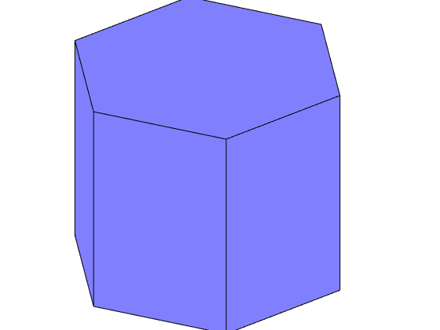
Internally, a crystal shape is represented as a list of faces which are bounded by a list of vertices
cS.V
ans = vector3d
size: 12 x 1
x y z
-0.393614 0 -0.308331
-0.393614 0 0.308331
-0.196807 -0.34088 0.308331
-0.196807 0.34088 -0.308331
-0.196807 -0.34088 -0.308331
-0.196807 0.34088 0.308331
0.196807 -0.34088 0.308331
0.196807 0.34088 -0.308331
0.196807 -0.34088 -0.308331
0.196807 0.34088 0.308331
0.393614 0 -0.308331
0.393614 0 0.308331
Calculating with crystal shapes
Crystal shapes are defined in crystal coordinates. Thus applying an orientation rotates them into specimen coordinates. This functionality can be used to visualize crystal orientations in EBSD maps
% plot an EBSD map clf % clear current figure plot(ebsd,ebsd.orientations) hold on scaling = 100; % scale the crystal shape to have a nice size % plot at position (500,500) the orientatation of the corresponding crystal plot(500,500,50, ebsd(500,500).orientations * cS * scaling) hold off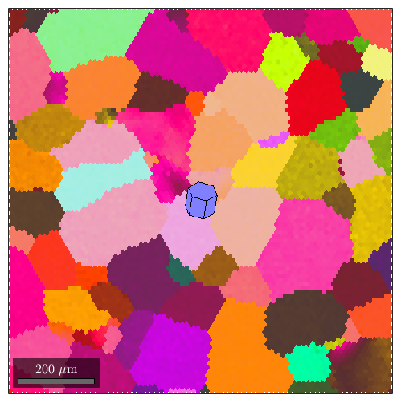
As we have seen in the previous section we can apply several operations on crystal shapes. These include
- factor * cS scales the crystal shape in size
- ori * cS rotates the crystal shape in the defined orientation
- [xy] + cS or [xyz] + cS shifts the crystal shape in the specified positions
At this point it comes into help that MTEX supports lists of crystal shapes, i.e., whenever one of the operations listed above includes a list (e.g. a list of orientations) the multiplication will yield a list of crystal shapes. Lets illustrate this
% compute some grains grains = calcGrains(ebsd); grains = smooth(grains,5); % and plot them plot(grains,grains.meanOrientation) % find the big ones isBig = grains.grainSize>50; % define a list of crystal shape that is oriented as the grain mean % orientation and scaled according to their area cSGrains = grains(isBig).meanOrientation * cS * 0.7 * sqrt(grains(isBig).area); % now we can plot these crystal shapes at the grain centers hold on plot(grains(isBig).centroid + cSGrains) hold off
I'm going to colorize the orientation data with the standard MTEX colorkey. To view the colorkey do: oM = ipfColorKey(ori_variable_name) plot(oM)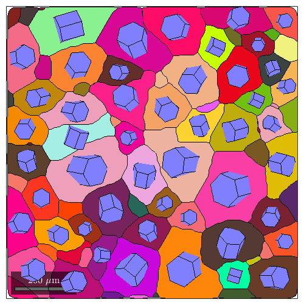
Plotting crystal shapes
The above can be accomplished a bit more directly and a bit more nice with
% plot a grain map plot(grains,grains.meanOrientation) % and on top for each large grain a crystal shape hold on plot(grains(isBig),0.7*cS) hold off
I'm going to colorize the orientation data with the standard MTEX colorkey. To view the colorkey do: oM = ipfColorKey(ori_variable_name) plot(oM)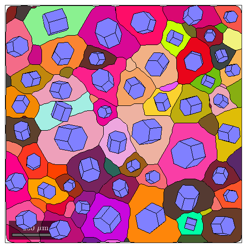
In the same manner we may visualize grain orientations and grains size within pole figures
plotPDF(grains(isBig).meanOrientation,Miller({1,0,-1,0},{0,0,0,1},ebsd.CS),'contour')
plot(grains(isBig).meanOrientation,0.002*cSGrains,'add2all')
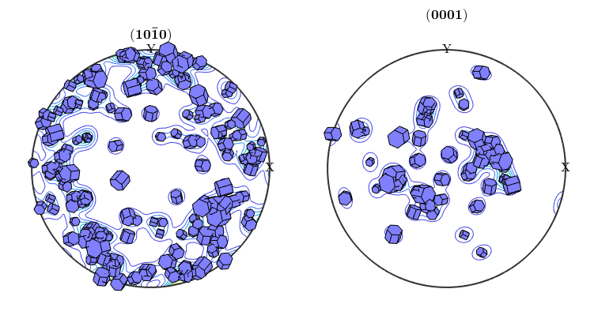
or even within ODF sections
% compute the odf odf = calcODF(ebsd.orientations); % plot the odf in sigma sections plotSection(odf,'sigma','contour') % and on top of it the crystal shapes plot(grains(isBig).meanOrientation,0.002*cSGrains,'add2all')

Twinning relationships
We may also you crystal shapes to illustrate twinning relation ships
% define some twinning misorientation mori = orientation.byAxisAngle(Miller({1 0-1 0},ebsd.CS),34.9*degree) % plot the crystal in ideal orientation close all plot(cS,'FaceAlpha',0.5) % and on top of it in twinning orientation hold on plot(mori * cS *0.9,'FaceColor','r') hold off view(45,20)
mori = misorientation size: 1 x 1 crystal symmetry : Titanium (Alpha) (622, X||a, Y||b*, Z||c) crystal symmetry : Titanium (Alpha) (622, X||a, Y||b*, Z||c) Bunge Euler angles in degree phi1 Phi phi2 Inv. 330 34.9 30 0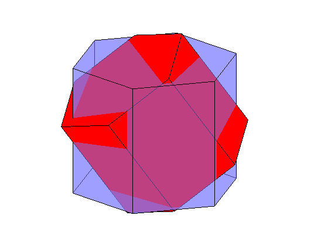
Defining complicated crystal shapes
For symmetries other then hexagonal or cubic one would like to have more complicated crystal shape representing the true appearance. To this end one has to include more faces into the representation and carefuly adjust their distance to the origin.
Lets consider a quartz crystal.
cs = loadCIF('quartz')
cs = crystalSymmetry mineral : Quartz symmetry : 321 a, b, c : 4.9, 4.9, 5.4 reference frame: X||a*, Y||b, Z||c*
Its shape is mainly bounded by the following faces
m = Miller({1,0,-1,0},cs); % hexagonal prism
r = Miller({1,0,-1,1},cs); % positive rhomboedron, usally bigger then z
z = Miller({0,1,-1,1},cs); % negative rhomboedron
s1 = Miller({2,-1,-1,1},cs);% left tridiagonal bipyramid
s2 = Miller({1,1,-2,1},cs); % right tridiagonal bipyramid
x1 = Miller({6,-1,-5,1},cs);% left positive Trapezohedron
x2 = Miller({5,1,-6,1},cs); % right positive Trapezohedron
If we take only the first three faces we end up with
N = [m,r,z]; cS = crystalShape(N) plot(cS)
cS = crystalShape mineral: Quartz (321, X||a*, Y||b, Z||c*) vertices: 8 faces: 18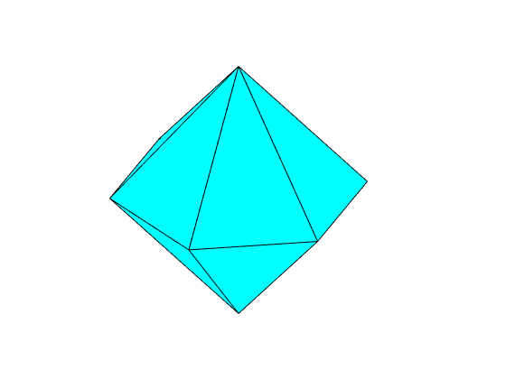
i.e. we see only the possitive and negative rhomboedrons, but the hexagonal prism are to far away from the origin to cut the shape. We may decrease the distance, by multiplying the coresponding normal with a factor larger then 1.
N = [2*m,r,z]; cS = crystalShape(N); plot(cS)

Next in a typical Quartz crystal the negativ rhomboedron is a bit smaller then the positiv rhomboedron. Lets correct for this.
% collect the face normal with the right scalling
N = [2*m,r,0.9*z];
cS = crystalShape(N);
plot(cS)
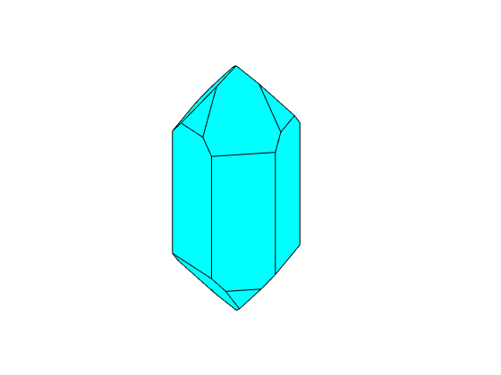
Finaly, we add the tridiagonal bipyramid and the positive Trapezohedron
% collect the face normal with the right scalling
N = [2*m,r,0.9*z,0.7*s1,0.3*x1];
cS = crystalShape(N);
plot(cS)
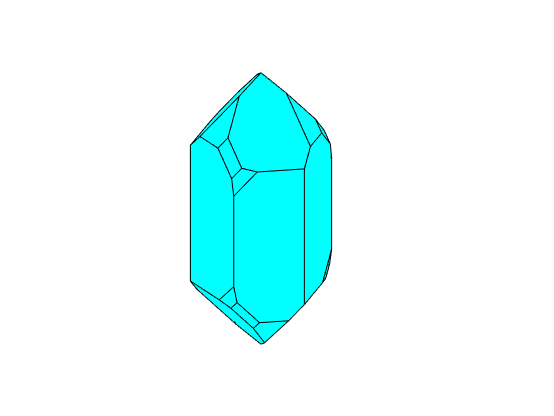
Marking crystal faces
We may colorize the faces according to their lattice planes using the command
plot(cS,'colored')
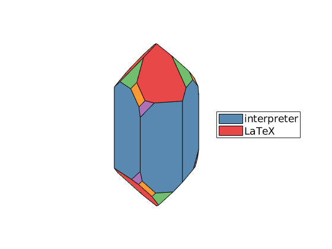
or even label the faces directly
plot(cS) N = unique(cS.N.symmetrise,'noSymmetry','stable'); fC = cS.faceCenter; for i = 1:length(N) text3(fC(i),char(round(N(i)),'latex'),'scaling',1.1,'interpreter','latex') end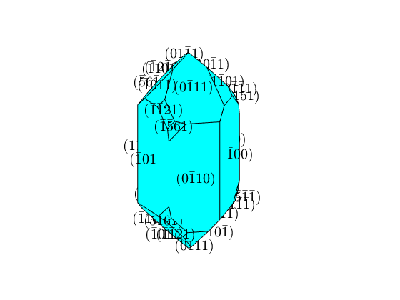
Defining complicated crystals more simple
We see that defining a complicated crystal shape is a tedious work. To this end MTEX allows to model the shape with a habitus and a extension parameter. This approach has been developed by J�rg Enderlein in Enderlein, J., 1997. A package for displaying crystal morphology. Mathematica Journal, 7(1). The two paraters are used to model the distance of a phase from the origin. Setting all parameters to one we obtain
% take the face normals unscaled N = [m,r,z,s2,x2]; habitus = 1; extension = [1 1 1]; cS = crystalShape(N,habitus,extension); plot(cS,'colored')

The scale parameter models the inverse extension of the crystal in each dimension. In order to make the crystal a bit longer and the negative rhomboedrons smaller we could do
extension = [0.9 1.1 1];
cS = crystalShape(N,habitus,extension);
plot(cS,'colored')

Next the habitus parameter describes how close faces with mixed hkl are to the origin. If we increase the habitus parameter the trapezohedron and the bipyramid become more and more dominant
habitus = 1.1; cS = crystalShape(N,habitus,extension); plot(cS,'colored'), snapnow habitus = 1.2; cS = crystalShape(N,habitus,extension); plot(cS,'colored'), snapnow habitus = 1.3; cS = crystalShape(N,habitus,extension); plot(cS,'colored')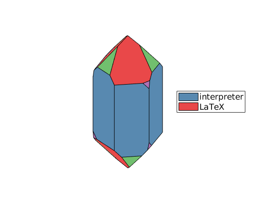 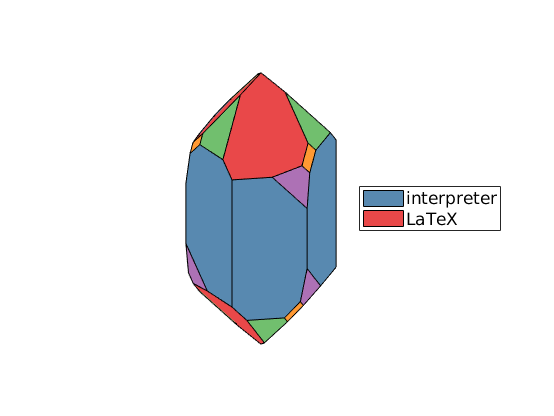 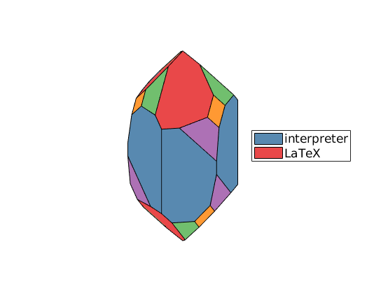
Select Faces
Gallery of hardcoded crystal shapes
plot(crystalShape.olivine,'colored')
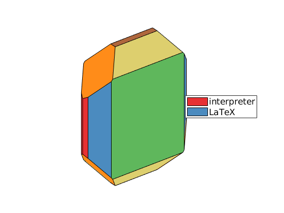
plot(crystalShape.garnet,'colored')

plot(crystalShape.topaz,'colored')

Complete Function list
| crystalShape | a class representing crystal shapes. |
| display | standard output |
| fitArea | change habitus of crystal shape to fit given faceAreas |
| length | overloads length |
| plot | colorize grains |
| plus | crystal shape should be first argument |
| repmat | implements repmat for crystalShape |
| rotate | a crystal shape by an rotation or orientation |
| rotate_outer | rotate a crystal shape by an rotation or orientation |
| size | overloads size |
| subsref | overloads subsref |